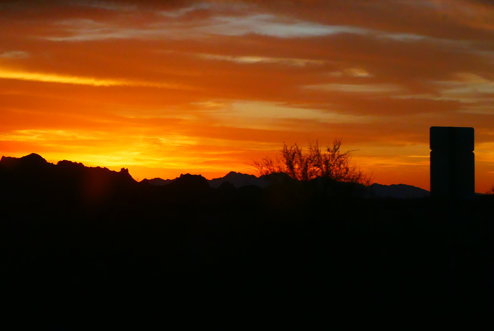
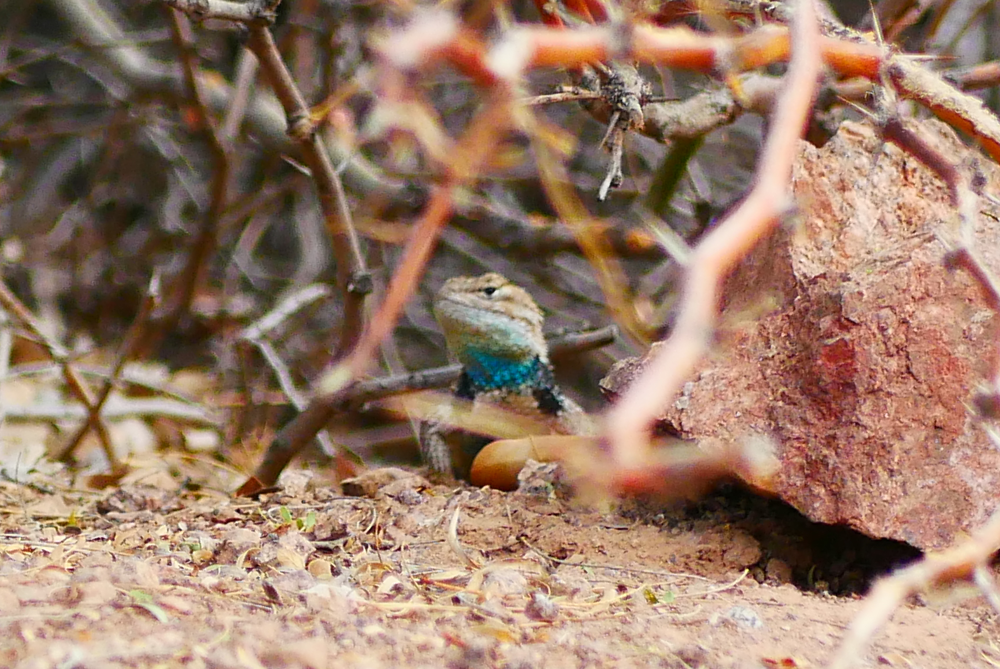

Discover more about my hobby : Photography.
Photography is such a fullfiling activity. The feeling you get when you take a nice picture is just unmatchable. Photography is so complete that it combines walking, visiting, dreaming, it stimulates your imagination, it develops your creativity, it makes you meet new people. It's so complete that there are even some people who can live by photography. How lucky they are!
People
People pictures or street photography is my favorite type of photography. It's the best way to get in touch with great personalities and capture insolits situations. There is always a story behind a street picture!

Landscapes
The feeling of contemplating a wonderful landscape is insane. Being part of the nature as a whole is a great experience you can try with landscapes photography because you need to explore and go deep in unknown places to get the best of the landscape you're trying to take.
Animals
Animals are the nicest things ever! Animals pictures are hard to take because they are so impredictable. But what's better than a cute picture of a squirrel in a tree?
all pictures are taken by me